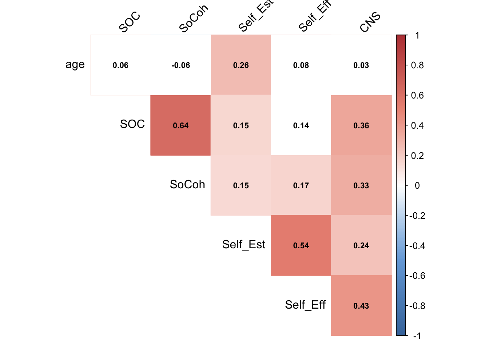

Chapter 2 GUI Online Survey: Comparing GUI and Non-GUI Members
193 entries (GUI: 104, non-GUI: 89)
2.1 Internal Consistency
All scales of psychological measures used in the online survey have good Cronbach’s alpha, ranging from .72 to .91 (good internal consistency). Therefore, we will proceed to include all the questions in the respective scales.
| vars | scales | Cronbachs |
|---|---|---|
| 1 | Social Cohesion | 0.83 |
| 2 | Sense of Community | 0.91 |
| 3 | Connection to Nature | 0.89 |
| 4 | Self Esteem | 0.71 |
| 5 | Self Efficacy | 0.91 |
2.2 Descriptive statistics
| Descriptive Statistics of Major Variables (GUI and Non GUI Members) | |||||||||||||
|---|---|---|---|---|---|---|---|---|---|---|---|---|---|
| vars | scales | n | mean | sd | median | trimmed | mad | min | max | range | skew | kurtosis | se |
| 1 | Age | 193 | 37.52 | 12.10 | 36.00 | 36.88 | 13.34 | 18.0 | 72.0 | 54.00 | 0.46 | −0.44 | 0.87 |
| 2 | Social Cohesion | 193 | 5.23 | 1.14 | 5.20 | 5.25 | 1.48 | 2.8 | 7.0 | 4.20 | −0.06 | −0.99 | 0.08 |
| 3 | Sense of Community | 193 | 4.84 | 1.10 | 4.88 | 4.86 | 1.30 | 1.0 | 7.0 | 6.00 | −0.24 | 0.04 | 0.08 |
| 4 | Connection to Nature | 193 | 5.35 | 0.96 | 5.40 | 5.36 | 1.04 | 2.6 | 7.0 | 4.40 | −0.11 | −0.74 | 0.07 |
| 5 | Self Esteem | 193 | 4.95 | 1.06 | 5.00 | 4.96 | 1.11 | 1.0 | 7.0 | 6.00 | −0.24 | 0.13 | 0.08 |
| 6 | Self Efficacy | 193 | 5.29 | 0.92 | 5.38 | 5.31 | 0.74 | 1.0 | 7.0 | 6.00 | −0.66 | 1.79 | 0.07 |
| Descriptive Statistics of Major Variables (Only GUI Members) | |||||||||||||
|---|---|---|---|---|---|---|---|---|---|---|---|---|---|
| vars | scales | n | mean | sd | median | trimmed | mad | min | max | range | skew | kurtosis | se |
| 1 | Age | 104 | 37.86 | 13.00 | 35.50 | 37.13 | 12.60 | 18.0 | 72.0 | 54.00 | 0.50 | −0.41 | 1.27 |
| 2 | Social Cohesion | 104 | 5.92 | 0.87 | 6.00 | 5.98 | 1.19 | 4.0 | 7.0 | 3.00 | −0.42 | −0.96 | 0.09 |
| 3 | Sense of Community | 104 | 5.19 | 1.04 | 5.12 | 5.21 | 1.11 | 2.9 | 7.0 | 4.12 | −0.07 | −0.76 | 0.10 |
| 4 | Connection to Nature | 104 | 5.55 | 0.92 | 5.60 | 5.57 | 0.89 | 3.5 | 7.0 | 3.50 | −0.21 | −0.87 | 0.09 |
| 5 | Self Esteem | 104 | 5.06 | 1.10 | 5.00 | 5.07 | 1.48 | 1.0 | 7.0 | 6.00 | −0.33 | 0.37 | 0.11 |
| 6 | Self Efficacy | 104 | 5.35 | 0.91 | 5.38 | 5.36 | 0.74 | 1.0 | 7.0 | 6.00 | −0.87 | 3.39 | 0.09 |
| Descriptive Statistics of Major Variables (Only non-GUI Members) | |||||||||||||
|---|---|---|---|---|---|---|---|---|---|---|---|---|---|
| vars | scales | n | mean | sd | median | trimmed | mad | min | max | range | skew | kurtosis | se |
| 1 | Age | 89 | 37.12 | 11.01 | 36.00 | 36.62 | 14.83 | 18.0 | 61.0 | 43.00 | 0.31 | −0.87 | 1.17 |
| 2 | Social Cohesion | 89 | 4.42 | 0.83 | 4.40 | 4.41 | 0.89 | 2.8 | 6.6 | 3.80 | 0.20 | −0.43 | 0.09 |
| 3 | Sense of Community | 89 | 4.43 | 1.04 | 4.38 | 4.47 | 0.93 | 1.0 | 6.1 | 5.12 | −0.51 | 0.30 | 0.11 |
| 4 | Connection to Nature | 89 | 5.13 | 0.97 | 5.10 | 5.12 | 1.04 | 2.6 | 7.0 | 4.40 | 0.04 | −0.60 | 0.10 |
| 5 | Self Esteem | 89 | 4.81 | 1.01 | 4.75 | 4.83 | 1.11 | 2.2 | 7.0 | 4.75 | −0.18 | −0.24 | 0.11 |
| 6 | Self Efficacy | 89 | 5.22 | 0.92 | 5.25 | 5.25 | 0.93 | 2.5 | 7.0 | 4.50 | −0.41 | 0.06 | 0.10 |
2.3 Normality Check
All the variables below excepts Sense of Community do not follow the normal distribution.
| variables | shapiro_test |
|---|---|
| Age | p <.001 |
| Social Cohesion | p <.001 |
| Sense of Community | 0.098* |
| Connection to Nature | 0.003 |
| Self Esteem | 0.005 |
| Self Efficacy | p <.001 |
| *Sense of community follows the normal distribution | |
2.4 Correlation Analysis
Figure 1. shows correlation r by the figures and highlights: towards shades of blue mean negative and shades of red mean positive correlation.
Figure 2. shows the correlation r by the figures and p-value by the highlights: the squares highlighted with the shades of red are significant correlations. The squares with grey are non-significant correlations.
Sense of Community (
SOC) and Social Cohesion (SoCoh) show the moderate to strong significant correlation. It’s interesting to note that Connection to Nature shows small to moderate significant correlations with all the psychological measurements. This will be examined further with the only GUI dataset.

2.5 Significant test (t-test and Wilcoxon Test)
As preliminary analyses, we assessed whether there were any differences between GUI and non-GUI group in terms of the respective psychological measures such as sense of community, nature connection, self-efficacy, and self-esteem.
We conducted the Welch Two Sample t-test on Sense of Community and Wilcoxon Signed-rank test on the rest of the scales. Statistically significant differences were observed in the Nature Connection between GUI members and non-GUI members (Table 6). Cohen’s d was estimated at 0.2, which is a small effect based on the Cohen’s guidelines (1992).
Although the effect is small, this study identified that those who engaged in GUI programs more than three months in the last two years have a stronger sense of connection to nature.
While social cohesion and a sense of community were significantly higher among the GUI members, responses from non-GUI members to these scales were about their neighborhood rather than about GUI. Therefore, this study cannot confirm that GUI members have a higher sense of community and social cohesion compared to the ones non-GUI group has.
| Table 6: Summary of Test Statistics | |||||||
|---|---|---|---|---|---|---|---|
| vars | scales | Cronbachs | shapiro_test | non_GUI_means | GUI_means | test_statistics | effect_size |
| 1 | Social Cohesion | 0.83 | p <.001 | 4.41 | 5.92 | p < .001** | 0.665 |
| 2 | Sense of Community | 0.91 | 0.098* | 4.42 | 5.19 | p < .001** | 0.738 |
| 3 | Connection to Nature | 0.89 | 0.003 | 5.12 | 5.54 | p < .001** | 0.219 |
| 4 | Self Esteem | 0.71 | 0.005 | 4.80 | 5.06 | 0.12 | 0.111 |
| 5 | Self Efficacy | 0.91 | p <.001 | 5.22 | 5.34 | 0.42 | 0.057 |
| *t-test for Sense of Community, and Wilcoxon test for the rest of the scales | |||||||